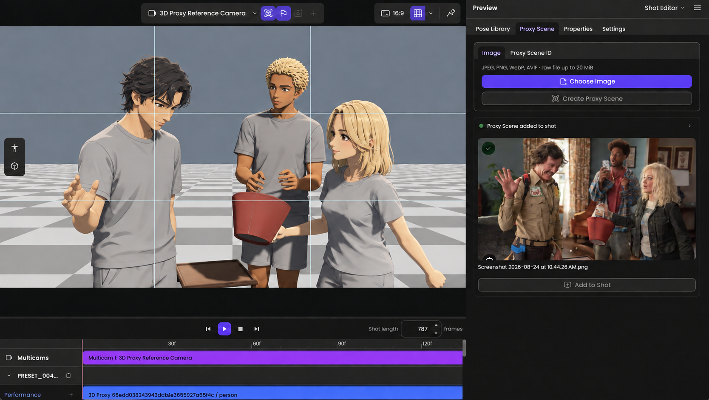
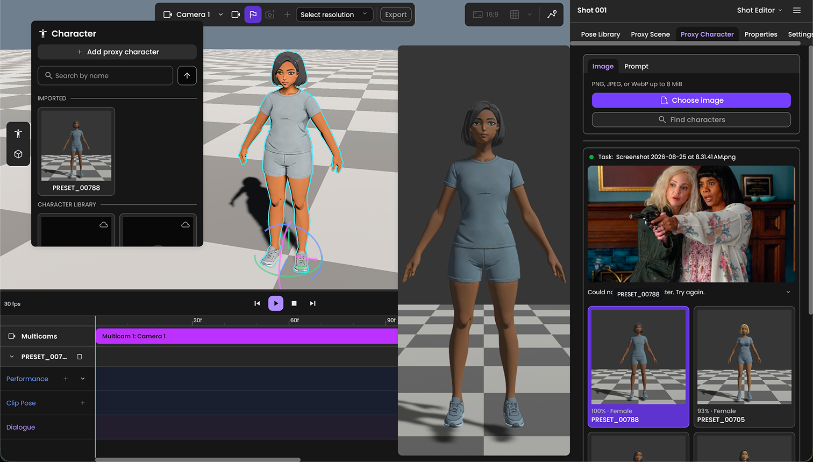
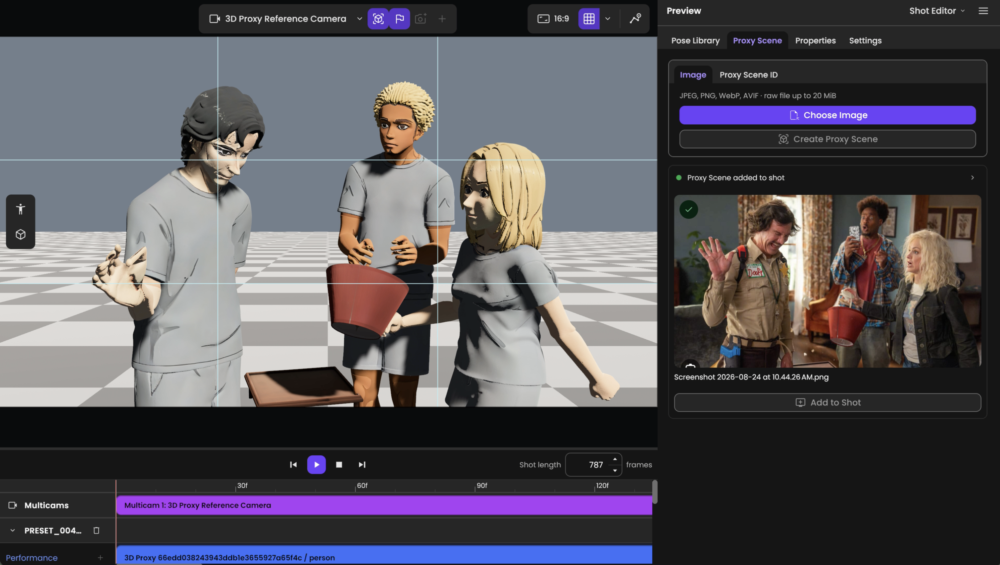
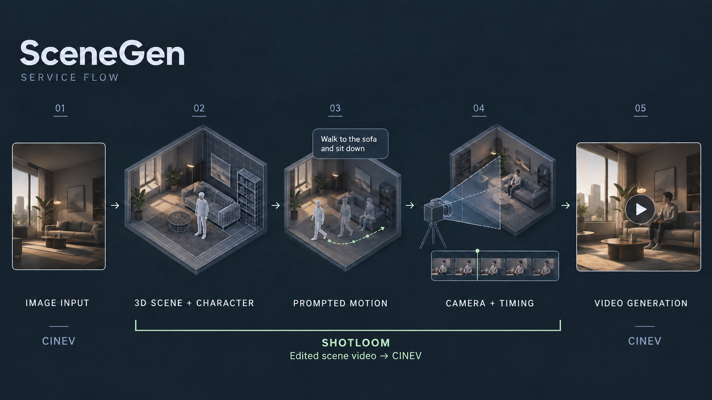
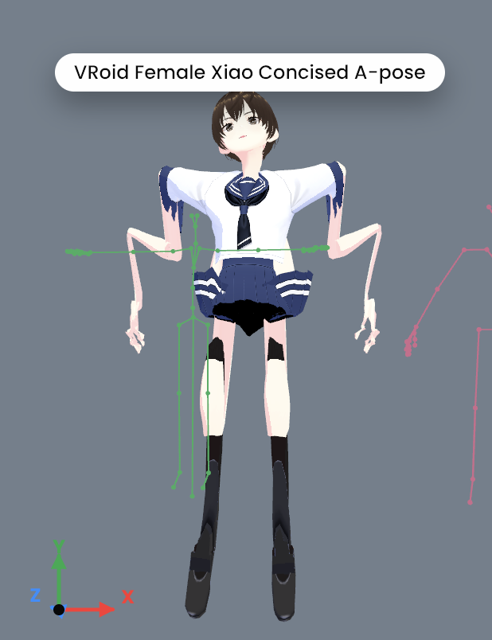
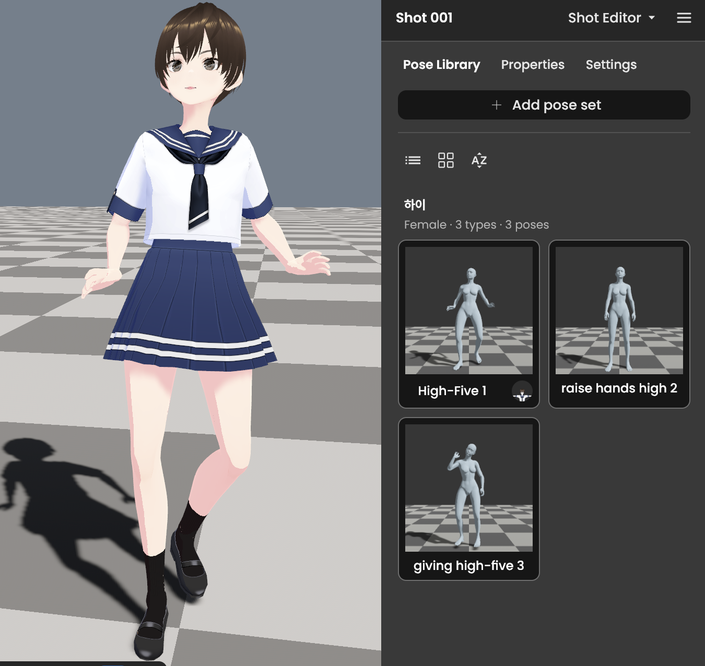
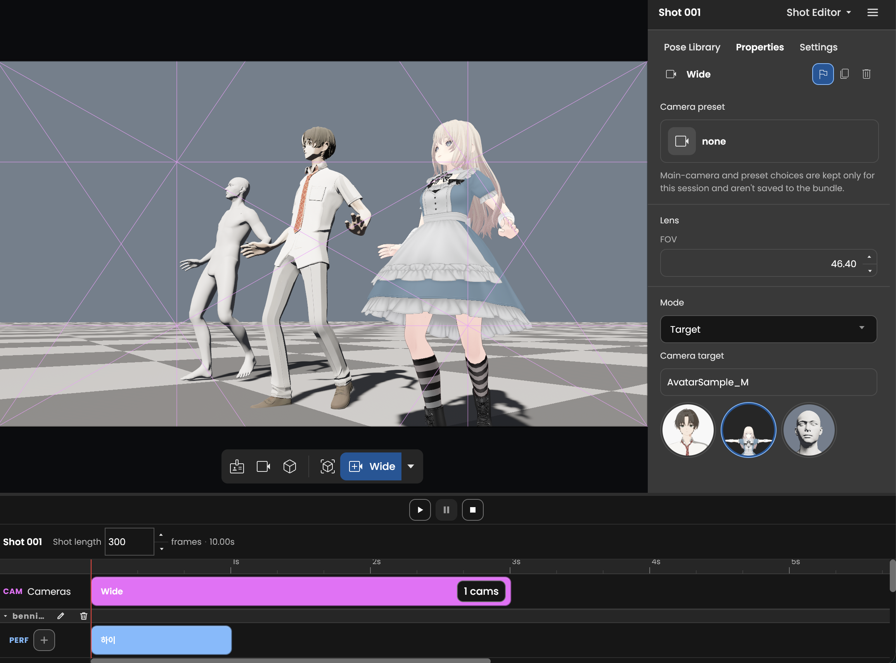
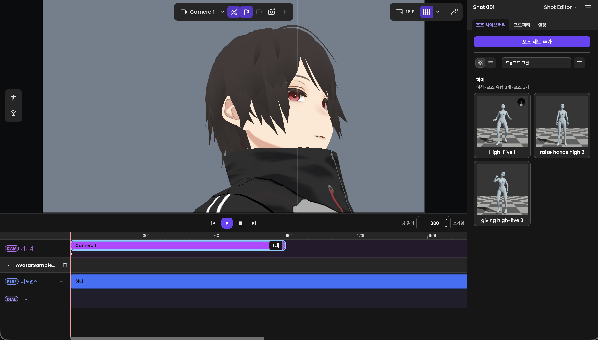

Shotloom
A web 3D editor connecting AI video production workflows
Cinamon · 2026.04 - 2026.08 · React / TypeScript · Rust / Bevy
Project overview
Shotloom is a web editor connecting core scene, character, motion, and camera workflows with Cinev’s motion and asset services. I designed and implemented the retargeter for external characters and in-house motion, integrated generative services into the frontend, and developed the camera and timeline editing UX.
| Area | Details |
|---|---|
| My role | Retargeter · Generative service integration in the frontend · Editing UX/UI |
| Intended users | Directors unfamiliar with 3D tools |
| Stage reached | Core flow implemented · Dev deployment |
Why Shotloom was needed
Cinev expanded its web creation features, including storyboard and character-sheet generation. Shotloom was developed to bring responsive 3D editing into this workflow.
Three design priorities
| Goal | Design direction |
|---|---|
| Core 3D workflows | Ensure core 3D workflows, from scene composition through character, motion, and camera editing. |
| Company service integration | Bring CINEV’s 3D motion and asset services into the editor so their generated outputs can be used in editing workflows. |
| Accessible editing | Build on the editing foundation and integrated services to let directors unfamiliar with 3D work through presets and motion strips. |
Company Service Integration
Shotloom connects CINEV’s services to core 3D editing workflows. I integrated background, character, motion, and video generation services into the React/TypeScript frontend, bringing their outputs into scene composition and editing. Proxy Character, Proxy Scene, and SceneGen are examples of these integrations.
Proxy Character
Image input → Review and select character candidates → Place in the scene

Proxy Scene
Image input → Generate a proxy scene → Add to the scene and edit

Use case: SceneGen
SceneGen is one of several use cases for Shotloom. Between CINEV’s image input and final video generation, Shotloom is used in steps 2–4 to compose and edit scenes, motion, and cameras. In this example, it takes an image and outputs a scene video reflecting those edits, which is passed to CINEV’s video generation stage.

| Step | Production flow | Tool |
|---|---|---|
| 01 | Image input | CINEV |
| 02 | 3D scene & character | Shotloom |
| 03 | Generate & apply motion | Shotloom |
| 04 | Edit camera & timing, output scene video | Shotloom |
| 05 | Generate video | CINEV |
I also connected Text to Pose and Text to Motion outputs to editing. SceneGen’s final video generation stage uses LLMs and services such as Seedance and MiniMax; generative models and backend services were handled by other team members.
Retargeter
Characters and motions arrived with different skeletons, coordinate systems, and rest poses. Requiring users to choose and configure source and target rigs would add complexity. I chose ARP and an A-pose as the common basis because they were widely used in the company’s motion assets.
| Input | Adapter | Conversion |
|---|---|---|
| Character sources | Character adapter | Skeleton & rest-pose conversion |
| Motion sources | Motion adapter | Skeleton & rest-pose conversion |
Common basis → Retarget → Apply to character
I began by connecting external characters with internal motion, then progressively normalized the data and separated character and motion adapters. Each side can add sources independently: a Mixamo character would require a character adapter, while Mixamo motion would require a motion adapter.
Fix: twisted legs, wrists, and feet
Applying Unreal MetaHuman-based motion converted through Blender to VRM Humanoid characters produced twisting. I changed the alignment to preserve the target’s rest rotation while aligning the required bone directions, using direction alignment, rest preservation, and finger curl handling for different bone groups.
For the tested character-motion combinations, the inward-wrapping leg deformation and wrist and foot twisting were resolved. Regression checks covered three VRM characters, including VRM 0.x and 1.0.
ARP Transition & Character Compatibility
Switching the reference rig from Cinev’s MetaHuman-based Blender export to ARP initially caused severe character deformation. I iterated on the retargeter to apply poses to VRM Humanoid characters and check compatibility across character sources.
Initial ARP Transition
{kind=link}

Pose Application to VRM Humanoid
{kind=link}

Application Across Character Sources
{kind=link}

Original screenshots from successive development stages · Click to enlarge
Editor UX & Editing Workflow
Frontend Implementation

I treated camera and timing as the first decisions a director needs to make. The editor foregrounded company presets and target-based camera presets for composing a scene. I tried video editors, 3D tools, and generative tools myself and discussed references and workflows with editor and designer acquaintances.
| Aspect | Initial approach | Implemented direction |
|---|---|---|
| Motion editing | Edit individual keyframes | Place generated and imported motion as strips |
| User controls | Expose many keyframes | Placement, duration, source range, and speed |
I began with keyframe-based editing, then found through use that imported animations were often edited as whole segments. I shifted toward strips, drawing on clip manipulation in After Effects and iMovie, while referencing Figma for keyframe selection and editing.
UX Writing
The early approach considered exposing development terminology and explaining it in a manual. Drawing on my experience with editing tools, I refined terminology to make editing targets and actions easier to understand. The table shows two examples from the timeline.
| Original label | Revised label |
|---|---|
| multicam | camera clips |
| performance clip | motion |
Development Prioritization Criteria
I prioritized the basic controls needed to place motion and adjust timing, implementing start/end placement, duration, source-range selection, and speed changes in the final week. A three-frame constraint in motion bridging received a temporary snapping interaction. Multi-strip and multi-keyframe editing and camera multi-selection remained areas for further work.
LLM Collaboration & Harness Engineering
In a four-person team using Claude and OpenAI, I configured a development harness around the existing shared guardrails and documentation. I managed and shared records of my work’s scope, ownership boundaries, reviews, and validation so colleagues could understand the changes and continue development.
| Managed area | Records managed and shared through the harness |
|---|---|
| Scope & ownership | Record purpose, implementation scope, inputs and outputs, and ownership boundaries in specs and PRs |
| Review & validation | Document review, fix, and revalidation procedures and results; check Git work state and CI results applicable to the changes |
| Continuity | Save decisions, open items, and next actions in checkpoints to support resuming work and subsequent development |
I applied Knitten, the harness I developed, to my own work with a Shotloom-specific workflow. It references existing project instructions at each stage and connects specs, implementation, reviews, and validation records to the changes on GitHub. I shared those records and code with the team.
Collaboration example: the IK control layer
For the IK control layer, I implemented the core and a colleague continued with the user-facing manipulation UI. I documented purpose, inputs and outputs, ownership boundaries, and validation so that subsequent development could build on the work.